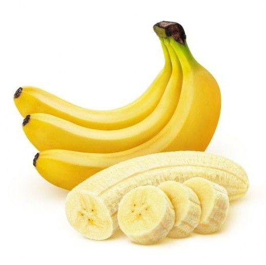
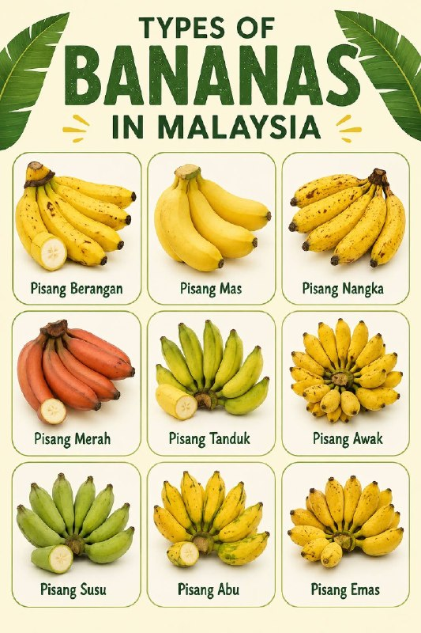
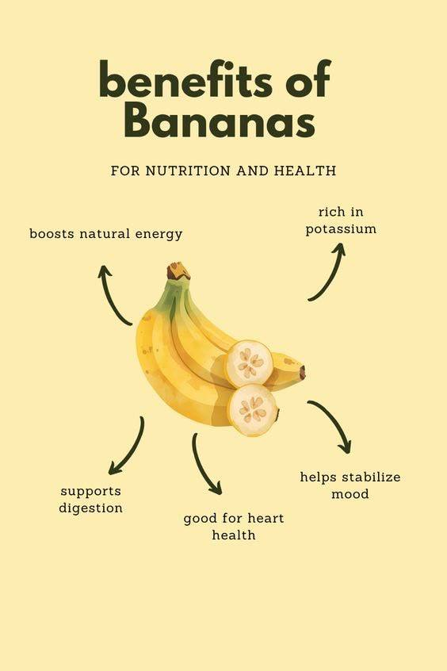

HISTORY
Banana is one of the oldest cultivated fruits in Malaysia and has been grown for centuries due to the country's tropical climate. It is widely planted across Malaysia and is an important fruit for local consumption, traditional foods, and agriculture.


TYPES OF BANANA
- Pisang Berangan - sweet, soft, and commonly eaten fresh
- Pisang Mas - small-sized banana with a sweet flavour and fragrant aroma
- Pisang Nangka - large banana with a slightly firm texture and unique taste
- Pisang Merah - a rare banana variety with reddish-purple skin and sweet flesh
- Pisang Tanduk -long and large banana, often used for frying and cooking
- Pisang Awak - popular local variety with a sweet taste and creamy texture
- Pisang Susu - small banana with soft flesh and a mild sweet flavour
- Pisang Abu - medium-sized banana commonly used for making chips and desserts
- Pisang Emas - small golden-yellow banana known for its sweet taste
HEALTH BENEFITS
- Rich in potassium, which supports heart health
- Provides energy through natural carbohydrates
- Contains dietary fiber that aids digestion
- Rich in Vitamin B6 and Vitamin C
- Helps maintain healthy muscles and nerves

HOW TO PLANT BANANA
1. Plant healthy banana suckers in fertile, well-drained soil.
2. Choose an area with plenty of sunlight.
3. Water the plants regularly, especially during dry periods.
4. Apply fertilizer to encourage healthy growth.
5. Remove unwanted shoots to improve fruit production.
FUN FACTS
- Pisang Goreng (fried banana) is one of Malaysia’s most popular snacks
- Banana leaves are often used to wrap traditional foods such as nasi lemak and kuih
- Every part of the banana plant can be useful, including the fruit, flower, stem, and leaves
- Bananas are available throughout the year because Malaysia's climate is suitable for continuous cultivation